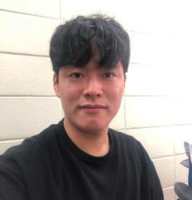

Instructor
Brett Kolesnik
bkolesnik AT berkeley DOT edu
I am currently a Neyman Visiting Assistant Professor in Statistics. I earned my PhD in Mathematics at the University of British Columbia in 2017, studying Probability Theory. I am delighted to be teaching Stat 134 this term!
OH:
- MWF 11-12 pm @ SLC
GSIs

Taejoo Ahn
taejoo_ahn AT berkeley DOT edu
Hi, I am Taejoo. I am a second year PhD student in Statistics. I like playing soccer, weight-training and watching movies in my free time.
Sections:
- MW 4-5 pm @ 70 Evans (Section 109)
- MW 5-6 pm @ 344 Evans (Section 112)
OH:
- TBA
Rowan Cassius
rocassius AT berkeley DOT edu
I graduated in Spring 2019 from Cal as an Applied Math major with a Statistics concentration, and now I am a Masters student at the School of Information studying Data Science. Outside of school and work, I have strong interests in dance, gymnastics, and following politics. I'm excited to on staff for Stat 134!
Sections:
- MW 11-12 pm @ B51 Hilderbrand (Section 101)
- MW 12-1 pm @ 3 Evans (Section 104)
OH:
- TBA
Alice Cima
alice_cima AT berkeley DOT edu
I am Alice, a first-year PhD student in Statistics. In my free time, I like watching movies, hiking and cooking Italian food.
Sections:
- MW 11-12 pm @ B56 Hilderbrand (Section 102)
- MW 12-1 pm @ 70 Evans (Section 103)
OH:
- TBA

Yassine El Maazouz
yassine.el-maazouz AT berkeley DOT edu
Hi, my name is Yassine, I am a first year PhD student. My research interests include Probability and Algebra.
Sections:
- MW 1-2 pm @ 9 Evans (Section 106)
- MW 3-4 pm @ 70 Evans (Section 107)
OH:
- TBA
Yiming Shi
ys1998 AT berkeley DOT edu
Hey, I’m Yiming, a senior majoring in Statistics and Economics. In my free time, I like hiking, getting caffeine-free boba, listening to podcasts, following crime TV shows and petting cats whenever I see them.
Sections:
- MW 1-2 pm @ 70 Evans (Section 105)
- MW 3-4 pm @ 3 Evans (Section 108)
OH:
- TBA
Chiao-Yu Yang
chiaoyu AT berkeley DOT edu
I am Chiao-Yu, a fourth-year PhD student in the Stat department. I am interested in multiple testing methodologies and various other machine learning problems.
Sections:
- MW 4-5 pm @ 9 Evans (Section 110)
- MW 5-6 pm @ 334 Evans (Section 111)
OH:
- TBA